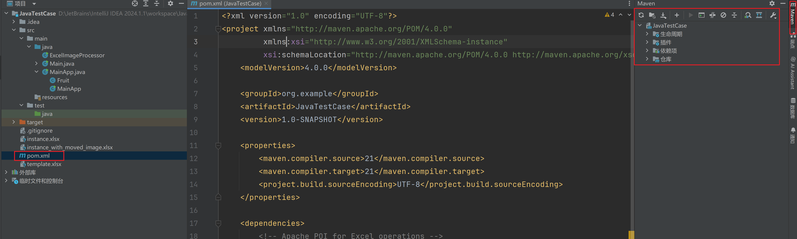

Maven 入门与依赖管理
项目管理与构建自动化 - 从零到实践
用 POM 驱动依赖、生命周期与交付引言
君子生非异也，善假于物也
—— 荀子
学习目标
- 理解 Maven 的定位与核心概念（POM、仓库、生命周期）
- 掌握依赖声明与解析流程，告别手动管理 JAR
- 配置本地/镜像仓库，加速国内构建体验
- 在 IDEA 中创建与配置 Maven 项目并实践依赖使用
完成本节后，你将能够：
- 用
pom.xml管理依赖与构建，确保可复现与一致性 - 熟练配置本地仓库与国内镜像，解决依赖下载缓慢问题
- 通过
mvn生命周期完成清理、编译、测试、打包的标准流程
学习建议：
- 边读边做：在 IDEA 中新建一个
quickstart项目并跟随示例操作 - 遇到依赖问题时，先检查
settings.xml镜像与本地仓库路径是否正确
旧开发痛点
- 手动管理 JAR：下载、拷贝、调整依赖关系，耗时且易错
- 环境不一致：不同环境依赖版本不同，构建结果不可复现
- 流程不统一：缺少统一的构建流程与测试执行，交付质量不稳定
这些问题直接导致：
- "在我电脑上能跑" - 经典的环境差异问题
- 项目依赖关系混乱，维护成本高
- 新人上手困难，缺乏标准化流程
什么是 Maven
Maven 名源意第绪语，意为"专家"。它是 Apache 基金会开源的项目管理与构建自动化工具。
核心理念：基于 POM（Project Object Model） 的声明式项目管理
三个核心功能：
- 依赖管理：在
pom.xml中声明库坐标，自动下载并解析传递依赖 - 构建生命周期：标准化
clean、compile、test、package、deploy - 插件机制：通过插件扩展构建能力（测试、打包、发布、站点生成）
一句话总结：Maven 同时处理三件事：依赖下载与解析、规范化项目结构与构建流程、按生命周期产出稳定的构建结果。
为什么选择 Maven
解决传统开发痛点：
- 统一依赖管理：通过声明式依赖与仓库统一版本，消除"环境差异"
- 标准化构建：规范的生命周期与插件体系，保证构建与测试自动化执行
- 中心化坐标：传递依赖解析，避免"缺 JAR、版本乱"的常见问题
带来的价值：
- 可复现性：相同的
pom.xml产生相同的构建结果 - 自动化：一键完成编译、测试、打包等所有构建步骤
- 标准化：项目结构统一，团队协作更高效
第一个 Maven 项目
在 IDEA 中创建项目：
- 选择 New Project → Maven
- 选择 maven-archetype-quickstart 原型（推荐）
- 填入 GroupId 和 ArtifactId
- 确认 Maven 配置（首次可使用 IDEA 自带版本）
示例坐标：
GroupId:cn.demo.learnArtifactId:learn-mavenVersion:1.0.0
项目结构解析

约定优于配置：
src/main/java- 业务源代码src/test/java- 测试源代码src/main/resources- 资源文件（配置、模板等）pom.xml- 项目对象模型，记录依赖、插件、构建信息
建议：遵循默认结构，便于工具识别与团队协作
POM 基础认识
<project xmlns="http://maven.apache.org/POM/4.0.0"
xmlns:xsi="http://www.w3.org/2001/XMLSchema-instance"
xsi:schemaLocation="http://maven.apache.org/POM/4.0.0 http://maven.apache.org/xsd/maven-4.0.0.xsd">
<modelVersion>4.0.0</modelVersion>
<groupId>cn.demo.learn</groupId>
<artifactId>learn</artifactId>
<version>1.0.0</version>
<name>learn</name>
<description>hello</description>
<properties>
<maven.compiler.source>17</maven.compiler.source>
<maven.compiler.target>17</maven.compiler.target>
</properties>
</project>GAV 坐标说明：
groupId- 组织ID（反向域名，如org.apache）artifactId- 项目ID（组内唯一）version- 版本（-SNAPSHOT表示开发版）
添加第一个依赖：Lombok
步骤：
- 在 MVNRepository 搜索
lombok - 选择稳定版本，复制 Maven 坐标
- 在
pom.xml的<dependencies>标签内添加 - 保存后 IDEA 自动下载依赖
<dependencies>
<dependency>
<groupId>org.projectlombok</groupId>
<artifactId>lombok</artifactId>
<version>1.18.22</version>
<scope>provided</scope>
</dependency>
</dependencies>注意：scope=provided 表示仅编译期需要，运行时由环境提供
代码示例：验证 Lombok 生效
import lombok.AllArgsConstructor;
import lombok.Data;
@Data
@AllArgsConstructor
public class Student {
String name;
int age;
}public class Main {
public static void main(String[] args) {
Student student = new Student("小明", 18);
System.out.println(student);
}
}预期输出：Student(name=小明, age=18)
如果看到正常输出，说明 Lombok 已成功生效！
Maven 生命周期实践
核心生命周期阶段：
clean- 清理target目录，删除里面文件compile- 编译源代码并拷贝把main/resources里的文件到target/classes，test- 运行测试用例package- 打包（JAR/WAR）到target/install- 安装到本地仓库（默认~/.m2/repository）
实践：依次点击这些按钮，观察 target 目录的变化
依赖解析机制

解析流程：
- 查找本地仓库（
~/.m2/repository） - 未命中时访问远程仓库（镜像/中央）
- 下载并缓存到本地仓库
- 解析传递依赖，处理冲突
- 加入项目类路径
依赖解析详细流程
排查建议：
- 使用
mvn dependency:tree查看依赖树 - 冲突时可用
exclusions或统一版本管理解决
本地仓库详解
默认位置：
${user.home}\.m2\repository（如 C:\Users\你的用户名\.m2\repository）
作用：
- 缓存依赖以加速构建
- 支持离线构建模式
- 团队共享本地缓存
自定义配置：
在 settings.xml 中指定本地仓库路径：
<settings>
<localRepository>D:/software/apache-maven/repository</localRepository>
</settings>建议：将仓库放在非系统盘，便于管理和备份
远程仓库与镜像配置
中央仓库：
- 官方地址：
https://repo.maven.apache.org/maven2/ - 权威且稳定，收录丰富的构件
国内镜像配置：
<mirrors>
<mirror>
<id>aliyunmaven</id>
<mirrorOf>central</mirrorOf>
<name>Aliyun Maven</name>
<url>https://maven.aliyun.com/repository/central</url>
</mirror>
</mirrors>作用：加速国内访问，提升下载速度和稳定性
IDEA Maven 配置
打开 File → Settings → Build Tools → Maven

配置要点：
- Maven home path - Maven 安装目录
- User settings file - 用户配置文件
- Local repository - 本地仓库路径
建议：初学者可使用 IDEA 自带 Maven，熟悉后再配置独立版本
settings.xml 完整配置
在 C:\Users\用户名\.m2\settings.xml 中配置：
<settings xmlns="http://maven.apache.org/SETTINGS/1.0.0"
xmlns:xsi="http://www.w3.org/2001/XMLSchema-instance"
xsi:schemaLocation="http://maven.apache.org/SETTINGS/1.0.0 http://maven.apache.org/xsd/settings-1.0.0.xsd">
<localRepository>D:/software/apache-maven/repository</localRepository>
<mirrors>
<mirror>
<id>aliyun</id>
<mirrorOf>central</mirrorOf>
<name>aliyun</name>
<url>https://maven.aliyun.com/repository/public</url>
</mirror>
</mirrors>
</settings>注意：如果 .m2 目录下没有 settings.xml，可直接创建该文件
依赖作用域（scope）详解
作用域决定依赖在编译、测试与运行阶段的可见性：
实践建议：正确设置作用域能减少包冲突与最终包体积
| 作用域 | 编译期 | 测试期 | 运行期 | 典型依赖 | 设置原因/场景 |
|---|---|---|---|---|---|
compile |
✓ | ✓ | ✓ | 通用库（如核心框架） | 代码在所有阶段都需要 |
provided |
✓ | ✓ | 由环境提供 | lombok、Servlet API |
仅编译/测试需要，运行期由容器/工具提供 |
runtime |
× | ✓ | ✓ | JDBC 驱动 | 编译面向接口，具体实现仅在运行/测试需要 |
test |
× | ✓ | × | JUnit、Mockito | 仅用于测试代码与运行器 |
system |
✓ | ✓ | 环境/本地提供 | 本地路径依赖 | 不可移植，不推荐 |
为什么这些库要用不同的 scope？
Lombok → provided
- 编译期通过注解处理器生成字节码；运行期不需要 Lombok 本身。
- 设置为
provided，避免打包进产物、减小体积且不引入无意义的运行期依赖。
<dependency>
<groupId>org.projectlombok</groupId>
<artifactId>lombok</artifactId>
<version>1.18.22</version>
<scope>provided</scope>
</dependency>JDBC 驱动 → runtime
- 编译面向
java.sql接口；具体驱动实现仅在运行时通过 SPI/ServiceLoader 加载。 - 设置为
runtime，不参与编译但在运行和测试阶段可用；若直接引用驱动类（如com.mysql.cj.jdbc.Driver），可改用compile。
<dependency>
<groupId>mysql</groupId>
<artifactId>mysql-connector-j</artifactId>
<version>8.0.33</version>
<scope>runtime</scope>
</dependency>JUnit → test
- 仅用于测试代码与测试运行器；不应该出现在生产环境的可运行包中。
- 设置为
test，确保不会被传递到生产依赖树。
<dependency>
<groupId>org.junit.jupiter</groupId>
<artifactId>junit-jupiter</artifactId>
<version>5.10.0</version>
<scope>test</scope>
</dependency>Servlet API → provided（参考）
- 运行期由容器（Tomcat/Jetty/Spring Boot）提供；项目不应打包它。
<dependency>
<groupId>jakarta.servlet</groupId>
<artifactId>jakarta.servlet-api</artifactId>
<version>5.0.0</version>
<scope>provided</scope>
</dependency>选择原则：编译期才需要 → 使用 provided；仅运行/测试期需要 → 使用 runtime；仅测试代码需要 → 使用 test；跨阶段都需要 → 使用 compile。
可选依赖与排除传递
什么是依赖？什么是传递依赖？
- 依赖（Dependency）：项目直接在
<dependencies>中声明的库，例如 Spring Boot Starter、MySQL 驱动等。 - 传递依赖（Transitive Dependency）：你引入的库自身又依赖的其他库，Maven 会自动把这些间接依赖也下载并加入你的项目。例如：引入
spring-boot-starter-web会自动引入spring-web、spring-webmvc、spring-boot-starter-tomcat等。 - 依赖树：通过
mvn dependency:tree可以查看项目的完整依赖关系，包括直接依赖与传递依赖。
可选依赖（optional）：
<dependency>
<groupId>org.slf4j</groupId>
<artifactId>slf4j-api</artifactId>
<version>1.7.30</version>
<optional>true</optional>
</dependency>用途：不希望被传递给下游，适用于可插拔的组件。例如：一个库支持多种日志实现，但不想强制下游项目引入所有实现，可以把这些实现标记为 optional。
排除传递依赖（exclusions）：
<dependency>
<groupId>org.junit.jupiter</groupId>
<artifactId>junit-jupiter</artifactId>
<version>5.8.1</version>
<exclusions>
<exclusion>
<groupId>org.junit.jupiter</groupId>
<artifactId>junit-jupiter-engine</artifactId>
</exclusion>
</exclusions>
</dependency>用途：剔除冲突或不必要的传递依赖。例如：项目已引入 log4j2，但某个依赖传递引入了 logback，可通过 <exclusions> 排除 logback，避免日志实现冲突。
典型场景：排除传递依赖
<!-- 项目已使用 log4j2 -->
<dependency>
<groupId>org.apache.logging.log4j</groupId>
<artifactId>log4j-core</artifactId>
<version>2.20.0</version>
</dependency>
<!-- 某工具库传递引入了 logback，需要排除 -->
<dependency>
<groupId>com.example</groupId>
<artifactId>some-tool</artifactId>
<version>1.2.3</version>
<exclusions>
<exclusion>
<groupId>ch.qos.logback</groupId>
<artifactId>logback-classic</artifactId>
</exclusion>
</exclusions>
</dependency>效果：避免同时存在两套日志实现，防止类加载冲突与日志输出混乱。
统一版本管理：dependencyManagement
在父工程集中声明依赖版本，子工程仅需声明坐标：
父工程配置：
<dependencyManagement>
<dependencies>
<dependency>
<groupId>org.projectlombok</groupId>
<artifactId>lombok</artifactId>
<version>1.18.22</version>
<scope>provided</scope>
</dependency>
<dependency>
<groupId>org.junit.jupiter</groupId>
<artifactId>junit-jupiter</artifactId>
<version>5.8.1</version>
<scope>test</scope>
</dependency>
</dependencies>
</dependencyManagement>子工程引用（无需版本）：
<dependencies>
<dependency>
<groupId>org.projectlombok</groupId>
<artifactId>lombok</artifactId>
</dependency>
</dependencies>优势：避免多处维护版本，防止版本冲突
父子项目结构
子工程继承配置：
<parent>
<groupId>cn.demo.learn</groupId>
<artifactId>learn-parent</artifactId>
<version>1.0.0</version>
</parent>继承机制：
- 子工程自动继承父工程的
properties、dependencyManagement - 子工程仍需在
<dependencies>中显式声明依赖 - 支持多级继承，但通常不超过两级
适用场景：
- 微服务项目的统一版本管理
- 企业级框架的多模块项目
- 需要统一依赖和构建配置的项目群
IDEA 集成技巧
Maven 工具窗口：
- Lifecycle - 快速执行构建阶段
- Dependencies - 查看和刷新依赖
- Plugins - 执行 Maven 插件目标
常用快捷操作：
Ctrl+Shift+O- 重新导入项目- 右键
pom.xml→Maven→Reimport - 依赖下载失败时，点击
Reload All Maven Projects
依赖查看：
- 右键依赖 →
Jump to Source- 跳转到源码 - 右键依赖 →
Exclude- 快速排除传递依赖
常见问题排查
依赖下载失败：
- 检查
settings.xml镜像配置是否正确 - 确认网络连接，尝试切换网络或代理
- 删除对应目录，重新下载
版本冲突：
- 使用
mvn dependency:tree查看依赖树 - 使用
<exclusions>排除冲突依赖 - 在
dependencyManagement中统一版本
编译失败：
- 检查 JDK 版本配置是否正确
- 确认
scope设置是否合适 - 查看控制台错误信息，定位具体问题
项目结构问题：
- 确认目录结构符合 Maven 约定
- 检查
pom.xml是否存在语法错误
最佳实践总结
项目组织：
- 遵循标准目录结构，不要随意修改
- 使用有意义的
groupId和artifactId - 版本号遵循语义化版本规范
依赖管理：
- 优先使用稳定版本，避免
alpha/beta - 合理设置
scope，减少不必要的依赖 - 使用
dependencyManagement统一版本管理
构建优化：
- 配置国内镜像，提升下载速度
- 本地仓库放在非系统盘
- 定期清理不需要的依赖
团队协作：
- 统一团队的开发环境配置
- 将
settings.xml纳入版本控制管理 - 建立规范的构建和发布流程
总结与展望
本节要点回顾：
- ✅ 理解了 Maven 的核心价值：依赖管理、构建自动化、项目标准化
- ✅ 掌握了 Maven 项目的基本操作：创建、配置、构建
- ✅ 学会了依赖管理的核心概念：坐标、作用域、传递依赖
- ✅ 配置了国内镜像环境，提升了构建效率
下一步学习：
- 深入 Maven 插件开发
- 学习 CI/CD 集成（Jenkins、GitHub Actions）
- 探索 Gradle 构建工具
- 学习仓库管理工具（Nexus、Artifactory）
记住：Maven 不仅是构建工具，更是现代 Java 开发的基础设施！